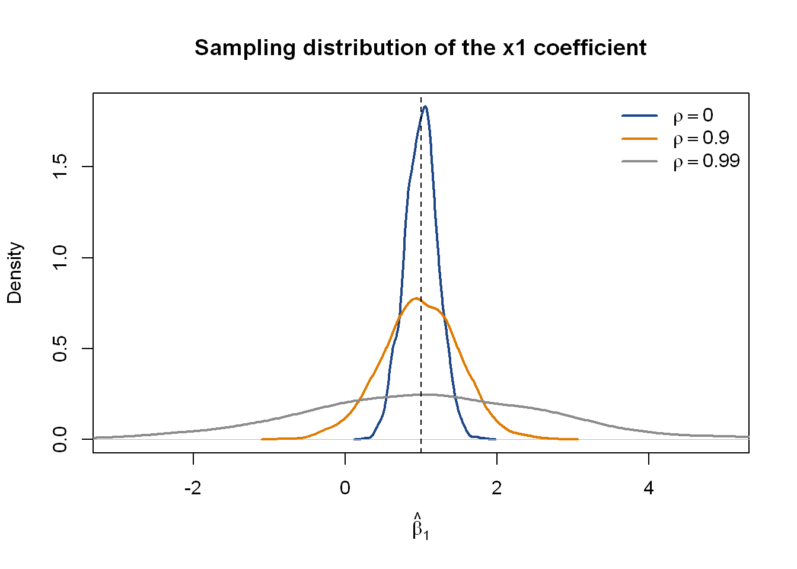
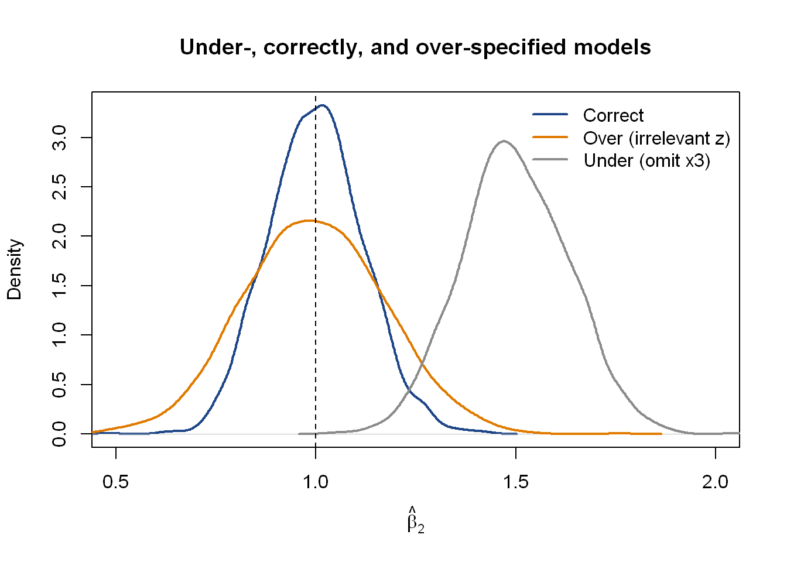
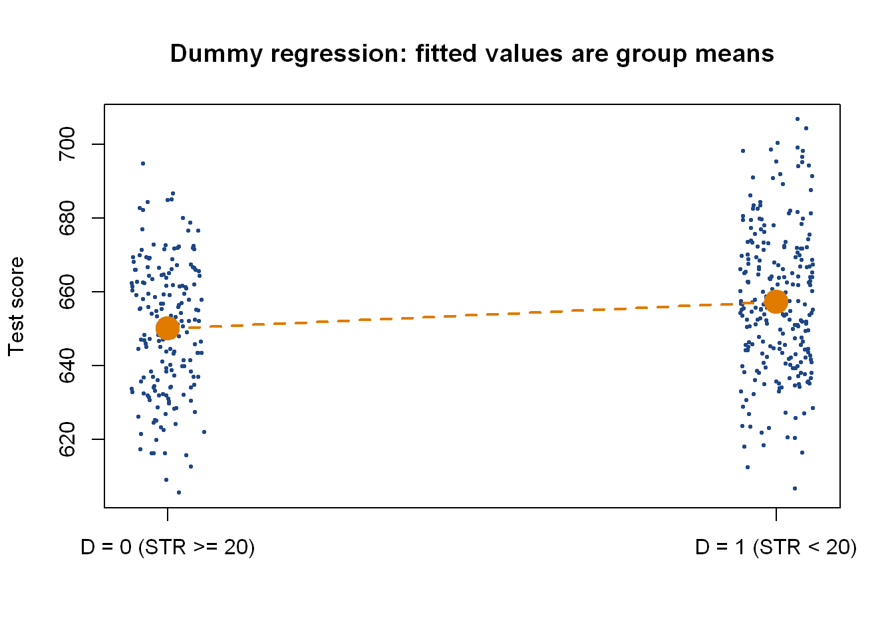
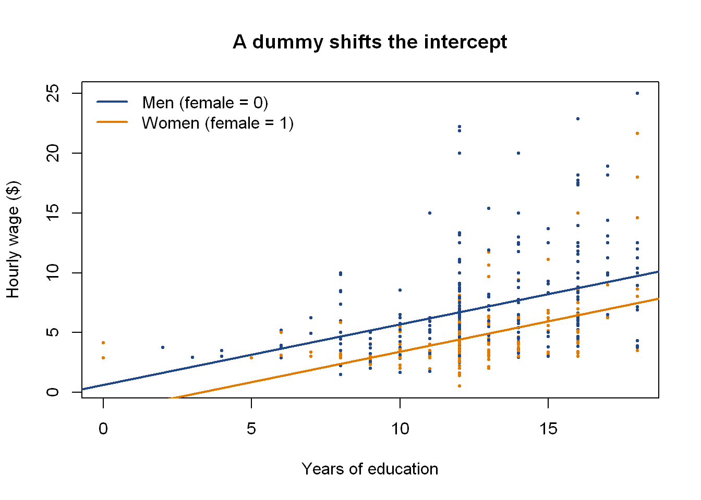
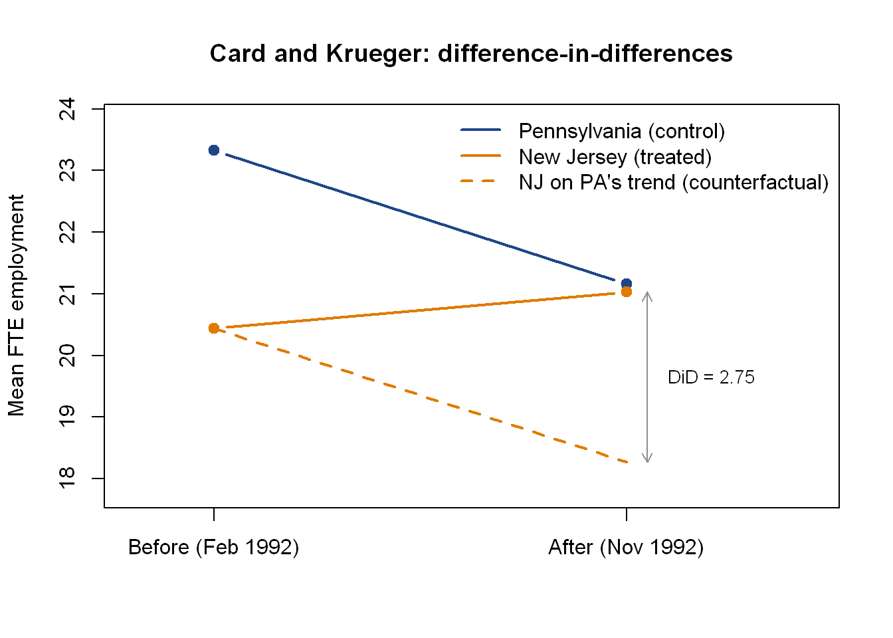
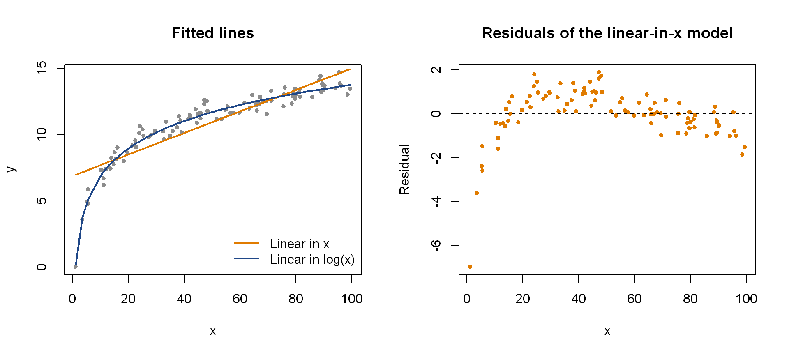
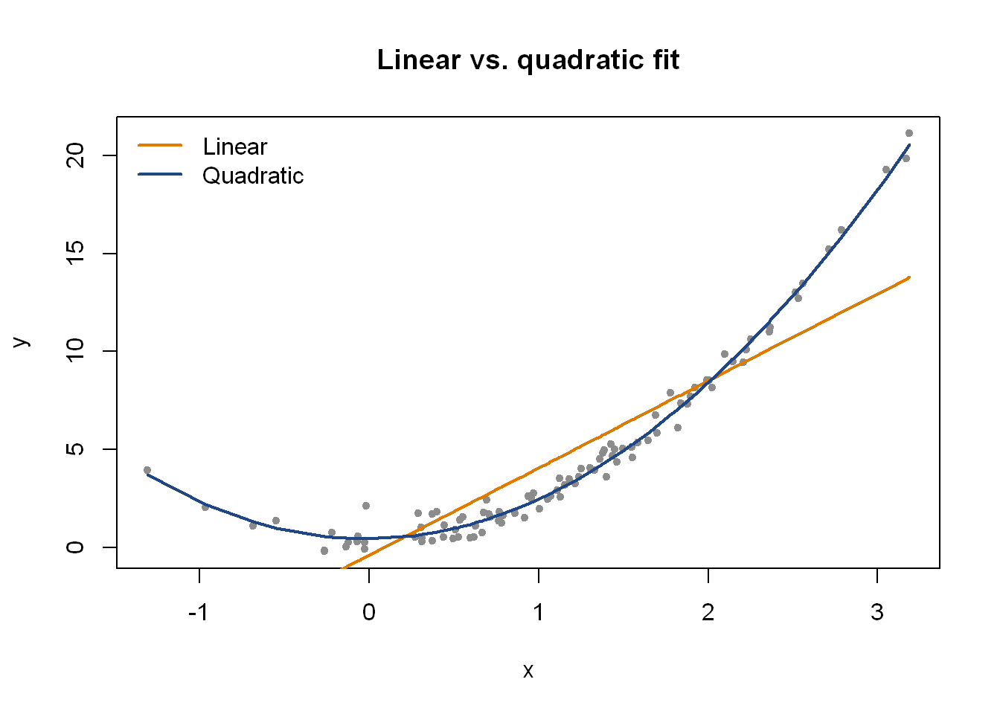
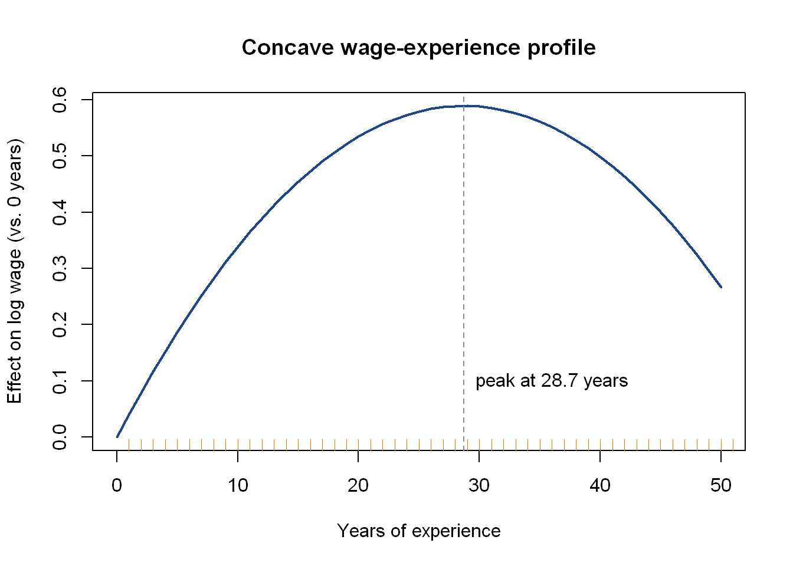
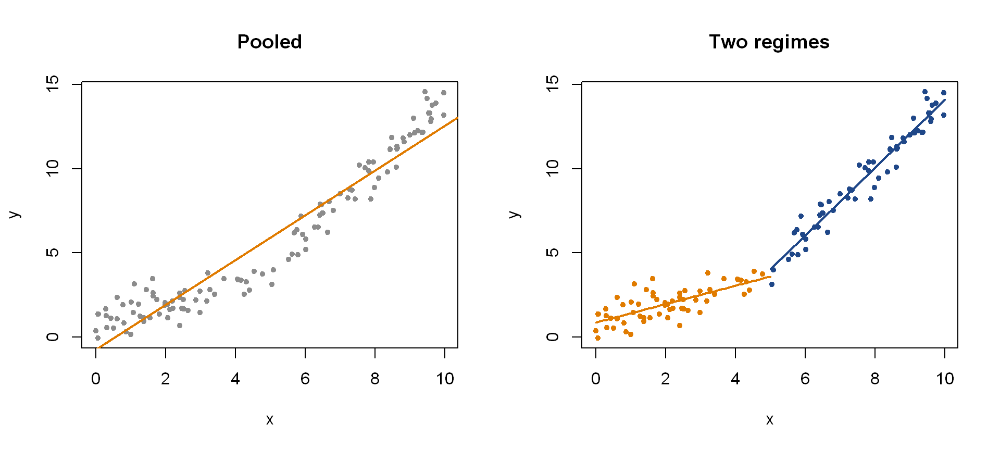

rm(list = ls())
packages <- c(
"wooldridge", # WAGE1, WAGE2, CEOSAL1 datasets
"AER", # CASchools dataset
"car", # vif(), linearHypothesis()
"lmtest", # resettest()
"modelsummary", # Regression tables
"knitr" # kable() tables
)
missing <- packages[!packages %in% rownames(installed.packages())]
if (length(missing) > 0) install.packages(missing)
# PoEdata (Card-Krueger data) is on GitHub, not CRAN
if (!"PoEdata" %in% rownames(installed.packages())) {
if (!"remotes" %in% rownames(installed.packages())) install.packages("remotes")
remotes::install_github("ccolonescu/PoEdata")
}
invisible(lapply(packages, library, character.only = TRUE))
col_blue <- "#1F4788"
col_orange <- "#E07B00"
col_grey <- "grey55"Multicollinearity, Model Specification, and Functional Form
Companion Notebook
ECONGA-1001.001: Applied Statistics and Econometrics I
New York University
What This Notebook Covers
Every model in this notebook is OLS on some matrix \(X\). Collinearity is about how the columns of \(X\) relate to one another. Dummies, interactions, logs, and polynomials are new columns we put into \(X\). The Chow test asks whether one \(X\beta\) fits everyone.
- Multicollinearity and coefficient variance
- Overspecification: irrelevant regressors
- Binary variables: intercept shifts, categories, interactions
- Difference-in-differences
- Functional form: logs, polynomials, RESET
- Structural change and the Chow test
We use two kinds of data. Simulated data, where we know the true data generating process (DGP), let us check what OLS gets right and wrong. Real data (Wooldridge’s WAGE1, WAGE2, and CEOSAL1; the California schools data; Card and Krueger’s fast-food survey) show what the same tools look like in practice.
1 Setup
2 Part 1. Multicollinearity and Coefficient Variance
2.1 Perfect Collinearity
Perfect multicollinearity means one column of \(X\) is an exact linear combination of the others. \(X\) then lacks full column rank (violating A2), \(X'X\) is singular, and \(\hat{\boldsymbol\beta} = (X'X)^{-1}X'y\) cannot be computed.
A small example: the third column below is \(x_1 + 2x_2\).
X <- matrix(c( 2, 3,
-2, 1,
2, 2), byrow = TRUE, nrow = 3)
X <- cbind(X, X[, 1] + 2 * X[, 2])
XpX <- t(X) %*% X
X [,1] [,2] [,3]
[1,] 2 3 8
[2,] -2 1 0
[3,] 2 2 6qr(XpX)$rank # 2, not 3[1] 2try(solve(XpX)) # try() shows the error without stopping the notebookError in solve.default(XpX) :
Lapack routine dgesv: system is exactly singular: U[3,3] = 0In real data, perfect collinearity usually comes from a constructed variable. Labor economists often use potential experience, defined as age − schooling − 6. Using WAGE2 (935 men):
data("wage2", package = "wooldridge")
wage2$potexper <- wage2$age - wage2$educ - 6
coef(lm(wage ~ educ + age + potexper, data = wage2))(Intercept) educ age potexper
-549.74961 60.57685 20.91337 NA R detects the exact dependence, drops the last column, and reports NA. Always check the output for dropped variables.
No pair of these regressors is perfectly correlated, because the dependence involves three columns (plus the intercept) at once. The auxiliary regression catches it with \(R^2 = 1\):
round(cor(wage2[, c("educ", "age", "potexper")]), 2) educ age potexper
educ 1.00 -0.01 -0.58
age -0.01 1.00 0.82
potexper -0.58 0.82 1.00summary(lm(potexper ~ educ + age, data = wage2))$r.squared[1] 12.2 Near Collinearity: High \(R^2\), Insignificant Coefficients
The usual problem is imperfect collinearity. OLS can be computed, and under the CLRM assumptions it is still unbiased and BLUE. The cost is precision. We simulate \(n = 50\) observations where both regressors truly matter:
\[y = 1 + x_1 + x_2 + \varepsilon, \qquad \text{Corr}(x_1, x_2) = 0.98, \qquad \varepsilon \sim N(0, 1.5^2)\]
set.seed(2)
n <- 50
rho <- 0.98
x1 <- rnorm(n)
x2 <- rho * x1 + sqrt(1 - rho^2) * rnorm(n)
y <- 1 + x1 + x2 + rnorm(n, sd = 1.5)
sim <- data.frame(y, x1, x2)
mdl_col <- lm(y ~ x1 + x2, data = sim)
summary(mdl_col)
Call:
lm(formula = y ~ x1 + x2, data = sim)
Residuals:
Min 1Q Median 3Q Max
-3.4181 -1.1197 0.1704 1.1059 2.8059
Coefficients:
Estimate Std. Error t value Pr(>|t|)
(Intercept) 1.2671 0.2229 5.683 8.09e-07 ***
x1 1.2164 0.9365 1.299 0.200
x2 0.6590 0.9422 0.699 0.488
---
Signif. codes: 0 '***' 0.001 '**' 0.01 '*' 0.05 '.' 0.1 ' ' 1
Residual standard error: 1.564 on 47 degrees of freedom
Multiple R-squared: 0.6533, Adjusted R-squared: 0.6386
F-statistic: 44.28 on 2 and 47 DF, p-value: 1.544e-11\(R^2 =\) 0.65 and the overall \(F =\) 44.3 (\(p =\) 1.5e-11): jointly, \(x_1\) and \(x_2\) clearly explain \(y\). Yet the individual \(t\)-statistics are only 1.3 and 0.7, even though both true coefficients equal 1. The data know the two variables together matter but can’t separate their individual effects. The \(t\) and \(F\) tests answer different questions.
2.3 Where the Variance Comes From
For any slope coefficient,
\[\operatorname{Var}(\hat\beta_j\mid X)=\frac{\sigma_\varepsilon^2}{\sum_i (x_{ji} - \bar x_j)^2}\times\underbrace{\frac1{1-R_j^2}}_{\text{VIF}_j},\]
where \(R_j^2\) is from the auxiliary regression of \(x_j\) on all the other regressors. Replacing \(\sigma_\varepsilon^2\) with \(s^2\) reproduces the standard error from lm() exactly:
s2 <- summary(mdl_col)$sigma^2
SST_1 <- sum((sim$x1 - mean(sim$x1))^2)
VIF_1 <- 1 / (1 - summary(lm(x1 ~ x2, data = sim))$r.squared)
c(se_formula = sqrt(s2 / SST_1 * VIF_1),
se_lm = coef(summary(mdl_col))["x1", "Std. Error"],
VIF = VIF_1,
car_vif = unname(vif(mdl_col)["x1"]))se_formula se_lm VIF car_vif
0.9365117 0.9365117 22.4097161 22.4097161 Without collinearity, the standard error would be 0.198. The VIF of 22.4 multiplies it by \(\sqrt{\text{VIF}} =\) 4.73.
2.4 Monte Carlo: Unbiased but Imprecise
One sample can mislead, so we repeat the experiment 2,000 times at \(\rho = 0\), \(0.9\), and \(0.99\):
set.seed(42)
R <- 2000
rhos <- c(0, 0.9, 0.99)
sim_beta1 <- function(rho, n = 50) {
x1 <- rnorm(n)
x2 <- rho * x1 + sqrt(1 - rho^2) * rnorm(n)
y <- 1 + x1 + x2 + rnorm(n, sd = 1.5)
coef(lm(y ~ x1 + x2))["x1"]
}
mc <- sapply(rhos, function(r) replicate(R, sim_beta1(r)))
data.frame(
rho = rhos,
`Mean of b1` = colMeans(mc),
`SD of b1` = apply(mc, 2, sd),
`SD relative to rho=0` = apply(mc, 2, sd) / sd(mc[, 1]),
`sqrt(VIF)` = 1 / sqrt(1 - rhos^2),
check.names = FALSE
) |> kable(digits = 3, caption = "Sampling distribution of the x1 coefficient (true value = 1)")| rho | Mean of b1 | SD of b1 | SD relative to rho=0 | sqrt(VIF) |
|---|---|---|---|---|
| 0.00 | 1.002 | 0.220 | 1.000 | 1.000 |
| 0.90 | 0.990 | 0.511 | 2.317 | 2.294 |
| 0.99 | 1.030 | 1.626 | 7.381 | 7.089 |
plot(density(mc[, 1]), lwd = 2, col = col_blue, xlim = c(-3, 5),
main = "Sampling distribution of the x1 coefficient",
xlab = expression(hat(beta)[1]))
lines(density(mc[, 2]), lwd = 2, col = col_orange)
lines(density(mc[, 3]), lwd = 2, col = col_grey)
abline(v = 1, lty = 2)
legend("topright", bty = "n", lwd = 2, col = c(col_blue, col_orange, col_grey),
legend = c(expression(rho == 0), expression(rho == 0.9), expression(rho == 0.99)))
At every \(\rho\), the estimates are centered on 1: no bias. The spread grows by about \(\sqrt{\text{VIF}}\), roughly 7 times wider at \(\rho = 0.99\). In any one sample, the estimate can land far from 1, even with the wrong sign.
2.5 VIFs in Real Data
How much does collinearity matter in a typical wage regression?
mdl_wage <- lm(wage ~ educ + exper + age + tenure, data = wage2)
vif(mdl_wage) educ exper age tenure
1.368084 1.842142 1.472443 1.099609 All VIFs are below 2: experience and age overlap, but each still has plenty of independent variation. Large VIFs are possible, but check before you worry.
3 Part 2. Overspecification: Irrelevant Regressors
Which mistake is worse: leaving out a relevant variable, or adding an irrelevant one? The true model is
\[y = 1 + x_2 + x_3 + \varepsilon, \qquad \text{Corr}(x_2, x_3) = 0.5,\]
and \(z\) is correlated with \(x_2\) (\(0.8\)) but has no effect on \(y\). Across 2,000 samples, we estimate the \(x_2\) coefficient three ways:
set.seed(7)
R <- 2000
n <- 100
one_draw <- function() {
x2 <- rnorm(n)
x3 <- 0.5 * x2 + rnorm(n, sd = sqrt(1 - 0.5^2))
z <- 0.8 * x2 + rnorm(n, sd = sqrt(1 - 0.8^2)) # irrelevant
y <- 1 + x2 + x3 + rnorm(n)
c(under = unname(coef(lm(y ~ x2))["x2"]), # omits x3
correct = unname(coef(lm(y ~ x2 + x3))["x2"]),
over = unname(coef(lm(y ~ x2 + x3 + z))["x2"])) # adds z
}
spec <- t(replicate(R, one_draw()))
data.frame(
Specification = c("Under (omit x3)", "Correct", "Over (add irrelevant z)"),
`Mean of b2` = colMeans(spec),
`SD of b2` = apply(spec, 2, sd),
check.names = FALSE, row.names = NULL
) |> kable(digits = 3, caption = "Estimates of the x2 coefficient (true value = 1)")| Specification | Mean of b2 | SD of b2 |
|---|---|---|
| Under (omit x3) | 1.498 | 0.134 |
| Correct | 1.000 | 0.118 |
| Over (add irrelevant z) | 0.995 | 0.178 |
plot(density(spec[, "correct"]), lwd = 2, col = col_blue, xlim = c(0.5, 2),
main = "Under-, correctly, and over-specified models",
xlab = expression(hat(beta)[2]))
lines(density(spec[, "over"]), lwd = 2, col = col_orange)
lines(density(spec[, "under"]), lwd = 2, col = col_grey)
abline(v = 1, lty = 2)
legend("topright", bty = "n", lwd = 2, col = c(col_blue, col_orange, col_grey),
legend = c("Correct", "Over (irrelevant z)", "Under (omit x3)"))
- Omitting \(x_3\) causes bias: the estimates center near \(1 + 1 \times 0.5 = 1.5\), the omitted variable bias formula.
- Adding \(z\) causes extra variance but no bias.
The variance increase is exactly what the VIF formula predicts. Adding \(z\) raises the auxiliary \(R^2\) for \(x_2\):
Rho <- matrix(c(1, 0.5, 0.8,
0.5, 1, 0.4,
0.8, 0.4, 1), 3, 3, byrow = TRUE,
dimnames = rep(list(c("x2", "x3", "z")), 2)) # population correlations
R2_correct <- 0.5^2 # x2 on x3
r <- Rho["x2", c("x3", "z")]
R2_over <- drop(r %*% solve(Rho[c("x3", "z"), c("x3", "z")]) %*% r) # x2 on x3, z
c(predicted_var_ratio = (1 - R2_correct) / (1 - R2_over),
simulated_var_ratio = var(spec[, "over"]) / var(spec[, "correct"]))predicted_var_ratio simulated_var_ratio
2.333333 2.260390 Note that in any sample, adding \(z\) cannot lower \(R^2\). Better in-sample fit is not the same as more precise estimates.
4 Part 3. Binary Variables
4.1 A Dummy Regression Is a Difference in Means
The California schools data cover 420 districts. Define \(D_i = 1\) if the student-teacher ratio (STR) is below 20, and estimate \(\text{TestScore}_i = \beta_0 + \beta_1 D_i + u_i\):
data("CASchools", package = "AER")
ca <- CASchools
ca$STR <- ca$students / ca$teachers
ca$score <- (ca$read + ca$math) / 2
ca$small <- as.integer(ca$STR < 20) # 0/1 dummy
mdl_D <- lm(score ~ small, data = ca)
coef(summary(mdl_D)) Estimate Std. Error t value Pr(>|t|)
(Intercept) 650.076798 1.393023 466.666105 0.0000000000
small 7.169435 1.846648 3.882405 0.0001201701grp_means <- tapply(ca$score, ca$small, mean)
grp_means 0 1
650.0768 657.2462 Since \(D\) only takes two values, \(\beta_1\) is not a slope:
- \(\beta_0 = E[\text{TestScore} \mid D = 0]\), the mean in large-class districts
- \(\beta_1 = E[\text{TestScore} \mid D = 1] - E[\text{TestScore} \mid D = 0]\), the difference in means
The OLS estimates are exactly the sample group means, and the \(t\)-test on \(\beta_1\) is the two-sample \(t\)-test with equal variances (the sign flips because t.test subtracts group 1 from group 0):
t.test(score ~ small, data = ca, var.equal = TRUE)$statistic t
-3.882405 plot(jitter(ca$small, 0.3), ca$score, pch = 20, cex = 0.6, col = col_blue,
xaxt = "n", xlab = "", ylab = "Test score",
main = "Dummy regression: fitted values are group means")
axis(1, at = c(0, 1), labels = c("D = 0 (STR >= 20)", "D = 1 (STR < 20)"))
points(c(0, 1), grp_means, pch = 19, cex = 2.5, col = col_orange)
segments(0, grp_means["0"], 1, grp_means["1"], col = col_orange, lwd = 2, lty = 2)
Small-class districts score 7.17 points higher (\(t =\) 3.88). This is a difference in averages, not a causal effect: these districts may also differ in income, English learners, and more.
4.2 Intercept Shifts with Controls
With Wooldridge’s WAGE1 data (526 workers), compare the raw gender wage gap to the gap holding education, experience, and tenure fixed:
data("wage1", package = "wooldridge")
mdl_raw <- lm(wage ~ female, data = wage1)
mdl_cond <- lm(wage ~ female + educ + exper + tenure, data = wage1)
modelsummary(list("Raw gap" = mdl_raw, "Conditional gap" = mdl_cond),
stars = TRUE, gof_map = c("nobs", "r.squared"))| Raw gap | Conditional gap | |
|---|---|---|
| + p < 0.1, * p < 0.05, ** p < 0.01, *** p < 0.001 | ||
| (Intercept) | 7.099*** | -1.568* |
| (0.210) | (0.725) | |
| female | -2.512*** | -1.811*** |
| (0.303) | (0.265) | |
| educ | 0.572*** | |
| (0.049) | ||
| exper | 0.025* | |
| (0.012) | ||
| tenure | 0.141*** | |
| (0.021) | ||
| Num.Obs. | 526 | 526 |
| R2 | 0.116 | 0.364 |
The raw gap is $2.51 per hour. Comparing a woman and a man with the same education, experience, and tenure, it falls to $1.81, because the women in this sample have somewhat less education and experience and much less tenure. The remaining gap is a conditional association: it may reflect discrimination, or anything else correlated with gender that the model omits (occupation, hours, field of study).
With education as the only control, the dummy gives two parallel lines:
b <- coef(lm(wage ~ female + educ, data = wage1))
plot(wage1$educ, wage1$wage, pch = 20, cex = 0.6,
col = ifelse(wage1$female == 1, col_orange, col_blue),
xlab = "Years of education", ylab = "Hourly wage ($)",
main = "A dummy shifts the intercept")
abline(a = b["(Intercept)"], b = b["educ"], col = col_blue, lwd = 2)
abline(a = b["(Intercept)"] + b["female"], b = b["educ"], col = col_orange, lwd = 2)
legend("topleft", bty = "n", lwd = 2, col = c(col_blue, col_orange),
legend = c("Men (female = 0)", "Women (female = 1)"))
4.3 The Dummy Variable Trap
Since \(\text{female}_i + \text{male}_i = 1\) for every worker, including both dummies with an intercept is perfect collinearity:
wage1$male <- 1 - wage1$female
coef(lm(wage ~ female + male + educ, data = wage1))(Intercept) female male educ
0.6228168 -2.2733619 NA 0.5064521 R drops male. Dropping either group gives the same fitted values; only the reference group changes:
m_f <- lm(wage ~ female + educ, data = wage1) # base: men
m_m <- lm(wage ~ male + educ, data = wage1) # base: women
c(female_coef = unname(coef(m_f)["female"]), male_coef = unname(coef(m_m)["male"]),
same_fit = isTRUE(all.equal(fitted(m_f), fitted(m_m))))female_coef male_coef same_fit
-2.273362 2.273362 1.000000 4.4 Categorical Variables
Group years of education into five categories. With \(G\) groups and an intercept, we need \(G - 1\) dummies; declaring a factor makes R create them, with the first level as the reference:
wage1$educ_cat <- cut(wage1$educ,
breaks = c(-Inf, 11, 12, 15, 16, Inf),
labels = c("HS dropout", "HS grad", "Some college",
"College grad", "Advanced"))
table(wage1$educ_cat)
HS dropout HS grad Some college College grad Advanced
116 198 113 68 31 mdl_cat <- lm(wage ~ educ_cat, data = wage1)
coef(summary(mdl_cat)) |> kable(digits = 3)| Estimate | Std. Error | t value | Pr(>|t|) | |
|---|---|---|---|---|
| (Intercept) | 4.057 | 0.305 | 13.314 | 0.000 |
| educ_catHS grad | 1.315 | 0.384 | 3.426 | 0.001 |
| educ_catSome college | 1.973 | 0.434 | 4.549 | 0.000 |
| educ_catCollege grad | 3.985 | 0.501 | 7.950 | 0.000 |
| educ_catAdvanced | 6.879 | 0.664 | 10.368 | 0.000 |
Each coefficient is a difference from high-school dropouts. Comparing two other groups means testing a difference of coefficients, e.g. some college vs. high-school graduate:
linearHypothesis(mdl_cat, "educ_catSome college - educ_catHS grad = 0")Why not code the categories 1–5? A single numeric regressor forces equal wage steps between adjacent categories. It is a restricted version of the dummy model, so we can test it:
wage1$educ_code <- as.integer(wage1$educ_cat)
F_code <- anova(lm(wage ~ educ_code, data = wage1), mdl_cat)
F_codeWith \(F =\) 3.63 (\(p =\) 0.013), we reject equal steps.
4.5 Interactions: Letting the Slope Differ
Does the return to education differ by gender? In R, female * educ expands to female + educ + female:educ:
mdl_int <- lm(lwage ~ female * educ + exper + expersq + tenure + tenursq,
data = wage1)
coef(summary(mdl_int))[c("female", "educ", "female:educ"), ] |> kable(digits = 4)| Estimate | Std. Error | t value | Pr(>|t|) | |
|---|---|---|---|---|
| female | -0.2268 | 0.1675 | -1.3536 | 0.1764 |
| educ | 0.0824 | 0.0085 | 9.7249 | 0.0000 |
| female:educ | -0.0056 | 0.0131 | -0.4260 | 0.6703 |
Women’s intercept differs by \(\hat\delta_0 =\) -0.227 and their return to education by \(\hat\delta_1 =\) -0.0056. Neither is individually significant. But the joint test strongly rejects:
linearHypothesis(mdl_int, c("female = 0", "female:educ = 0"))Why the contrast? It’s collinearity again. female × educ equals educ for women and 0 for men, so it looks a lot like female itself:
cor(wage1$female, wage1$female * wage1$educ)[1] 0.9635661The data clearly show that women earn less, but can’t tell whether to assign it to the intercept or the slope.
Centering helps. \(\hat\delta_0\) is the gap at zero years of education, where almost nobody is. Centering education at its mean makes the female coefficient the gap at average education:
wage1$educ_c <- wage1$educ - mean(wage1$educ)
mdl_int_c <- lm(lwage ~ female * educ_c + exper + expersq + tenure + tenursq,
data = wage1)
coef(summary(mdl_int_c))[c("female", "female:educ_c"), ] |> kable(digits = 4)| Estimate | Std. Error | t value | Pr(>|t|) | |
|---|---|---|---|---|
| female | -0.2967 | 0.0358 | -8.2792 | 0.0000 |
| female:educ_c | -0.0056 | 0.0131 | -0.4260 | 0.6703 |
Same model, same fit. Now the gap at mean education is -0.297 log points (\(t =\) -8.3): women earn about 26% less, using the exact conversion \(e^{\hat\delta} - 1\).
5 Part 4. Difference-in-Differences
5.1 Four Means, One Regression
The DiD estimator compares four averages:
\[\hat{\delta}_{DiD}=\left(\bar{y}_{T, A}-\bar{y}_{C, A}\right)-\left(\bar{y}_{T, B}-\bar{y}_{C, B}\right)\]
John Snow’s cholera data (deaths per 10,000) have one number per cell. Between 1849 and 1854, the Lambeth company (treated) moved its water intake upstream; Southwark & Vauxhall (control) did not.
snow <- data.frame(treated = c(0, 0, 1, 1),
after = c(0, 1, 0, 1),
deaths = c(135, 147, 85, 19))
with(snow, (deaths[4] - deaths[2]) - (deaths[3] - deaths[1]))[1] -78coef(lm(deaths ~ treated * after, data = snow)) (Intercept) treated after treated:after
135 -50 12 -78 The interaction coefficient is the DiD. The other coefficients are the control group’s “before” level (135), the pre-existing treated–control gap (−50), and the control group’s change over time (+12). With real micro-data, the regression also gives us a standard error and room for controls.
5.2 Card and Krueger (1994): Minimum Wage and Employment
On April 1, 1992, New Jersey raised its minimum wage from $4.25 to $5.05. Card and Krueger surveyed fast-food restaurants in New Jersey (treated) and eastern Pennsylvania (control) before and after. The outcome is full-time-equivalent employment (fte).
data("njmin3", package = "PoEdata")
ck <- njmin3
names(ck)[names(ck) == "d"] <- "after"
cell_means <- with(ck, tapply(fte, list(State = ifelse(nj == 1, "NJ (treated)", "PA (control)"),
Period = ifelse(after == 1, "After", "Before")),
mean, na.rm = TRUE))[, c("Before", "After")]
cell_means |> kable(digits = 2, caption = "Mean FTE employment per restaurant")| Before | After | |
|---|---|---|
| NJ (treated) | 20.44 | 21.03 |
| PA (control) | 23.33 | 21.17 |
did_manual <- (cell_means["NJ (treated)", "After"] - cell_means["PA (control)", "After"]) -
(cell_means["NJ (treated)", "Before"] - cell_means["PA (control)", "Before"])
did_manual[1] 2.753606Employment fell in Pennsylvania and rose slightly in New Jersey. If New Jersey had followed Pennsylvania’s trend (the dashed line), it would have ended 2.75 FTE workers lower:
nj_cf <- cell_means["NJ (treated)", "Before"] +
c(0, cell_means["PA (control)", "After"] - cell_means["PA (control)", "Before"])
plot(c(0, 1), cell_means["PA (control)", ], type = "b", pch = 19, lwd = 2, col = col_blue,
ylim = range(cell_means, nj_cf) + c(-0.5, 0.5), xlim = c(-0.2, 1.45), xaxt = "n",
xlab = "", ylab = "Mean FTE employment", main = "Card and Krueger: difference-in-differences")
lines(c(0, 1), cell_means["NJ (treated)", ], type = "b", pch = 19, lwd = 2, col = col_orange)
lines(c(0, 1), nj_cf, lty = 2, lwd = 2, col = col_orange)
arrows(1.05, nj_cf[2], 1.05, cell_means["NJ (treated)", "After"],
code = 3, length = 0.08, col = col_grey)
text(1.07, mean(c(nj_cf[2], cell_means["NJ (treated)", "After"])),
paste0("DiD = ", round(did_manual, 2)), pos = 4, cex = 0.85)
axis(1, at = c(0, 1), labels = c("Before (Feb 1992)", "After (Nov 1992)"))
legend("topright", bty = "n", lwd = 2, lty = c(1, 1, 2),
col = c(col_blue, col_orange, col_orange),
legend = c("Pennsylvania (control)", "New Jersey (treated)",
"NJ on PA's trend (counterfactual)"))
The regression gives the same number, and lets us add controls for chain, ownership, and region:
ck1 <- lm(fte ~ nj * after, data = ck)
ck2 <- lm(fte ~ nj * after + kfc + roys + wendys + co_owned, data = ck)
ck3 <- lm(fte ~ nj * after + kfc + roys + wendys + co_owned +
southj + centralj + pa1, data = ck)
modelsummary(
list("(1)" = ck1, "(2) + chain, ownership" = ck2, "(3) + region" = ck3),
stars = TRUE,
coef_map = c("nj:after" = "NJ x After (DiD)", "nj" = "NJ", "after" = "After"),
gof_map = c("nobs", "r.squared")
)| (1) | (2) + chain, ownership | (3) + region | |
|---|---|---|---|
| + p < 0.1, * p < 0.05, ** p < 0.01, *** p < 0.001 | |||
| NJ x After (DiD) | 2.754 | 2.845+ | 2.815+ |
| (1.688) | (1.523) | (1.502) | |
| NJ | -2.892* | -2.377* | -0.908 |
| (1.194) | (1.079) | (1.272) | |
| After | -2.166 | -2.224 | -2.212 |
| (1.516) | (1.368) | (1.349) | |
| Num.Obs. | 794 | 794 | 794 |
| R2 | 0.007 | 0.196 | 0.221 |
Standard competitive theory predicts \(\delta < 0\). Testing \(H_0: \delta \geq 0\) against \(H_1: \delta < 0\), we reject only if \(t\) falls below -1.647. Instead \(t =\) 1.63 is positive: no evidence that the increase reduced employment.
The controls barely move the estimate (2.75 to 2.81) but shrink its standard error (1.69 to 1.50) by explaining restaurant-to-restaurant variation. Identification still comes from the before/after and NJ/PA comparison.
5.3 The Key Assumption: Parallel Trends
DiD treats the control group’s change as the treated group’s counterfactual. That requires parallel trends: without the policy, New Jersey’s employment would have changed by the same amount as Pennsylvania’s.
- Different levels are fine; DiD differences them out.
- With only two periods, the assumption can’t be tested. With several pre-treatment periods, we can check whether the groups moved together beforehand.
- It fails if something else hit one group but not the other in between.
One more caveat: each restaurant appears twice, so its observations are probably correlated. The standard errors above ignore this; clustered standard errors address it.
6 Part 5. Functional Form
6.1 Linear in Parameters, Not in \(X\)
The true DGP is \(Y_i = 3 \ln(X_i) + \varepsilon_i\), with \(X_i \sim \mathcal{U}(1, 100)\) and \(\varepsilon_i \sim N(0, 0.5^2)\). Both a line in \(X\) and a line in \(\ln X\) are linear in the parameters, so both are just OLS:
set.seed(123)
n_ff <- 100
x <- runif(n_ff, min = 1, max = 100)
y <- 3 * log(x) + rnorm(n_ff, sd = 0.5)
mdl_linx <- lm(y ~ x)
mdl_logx <- lm(y ~ log(x))
modelsummary(list("y ~ x" = mdl_linx, "y ~ log(x)" = mdl_logx),
stars = TRUE, gof_map = c("nobs", "r.squared"))| y ~ x | y ~ log(x) | |
|---|---|---|
| + p < 0.1, * p < 0.05, ** p < 0.01, *** p < 0.001 | ||
| (Intercept) | 6.904*** | 0.027 |
| (0.244) | (0.217) | |
| x | 0.081*** | |
| (0.004) | ||
| log(x) | 2.985*** | |
| (0.058) | ||
| Num.Obs. | 100 | 100 |
| R2 | 0.790 | 0.965 |
o <- order(x)
par(mfrow = c(1, 2))
plot(x, y, pch = 20, col = col_grey, main = "Fitted lines")
lines(x[o], fitted(mdl_linx)[o], col = col_orange, lwd = 2)
lines(x[o], fitted(mdl_logx)[o], col = col_blue, lwd = 2)
legend("bottomright", bty = "n", lwd = 2, col = c(col_orange, col_blue),
legend = c("Linear in x", "Linear in log(x)"))
plot(x, resid(mdl_linx), pch = 20, col = col_orange,
main = "Residuals of the linear-in-x model", ylab = "Residual")
abline(h = 0, lty = 2)
par(mfrow = c(1, 1))The linear model’s \(R^2\) of 0.79 looks respectable, but its residuals have a clear pattern in \(x\). If \(E[\varepsilon \mid X] = 0\), there should be none. Plotting residuals against each regressor is the simplest functional form check.
6.2 Polynomial Terms
Now the true DGP is quadratic: \(Y_i = 0.5 + 2X_i^2 + \varepsilon_i\), with \(X_i \sim N(1, 1)\).
set.seed(123)
x <- rnorm(n_ff, mean = 1, sd = 1)
y <- 0.5 + 2 * x^2 + rnorm(n_ff, sd = 0.5)
mdl_lin <- lm(y ~ x)
mdl_quad <- lm(y ~ x + I(x^2)) # I() makes ^ mean "square"
modelsummary(list("Linear" = mdl_lin, "Quadratic" = mdl_quad),
stars = TRUE, gof_map = c("nobs", "r.squared"))| Linear | Quadratic | |
|---|---|---|
| + p < 0.1, * p < 0.05, ** p < 0.01, *** p < 0.001 | ||
| (Intercept) | -0.373 | 0.456*** |
| (0.353) | (0.078) | |
| x | 4.445*** | 0.073 |
| (0.249) | (0.111) | |
| I(x^2) | 1.955*** | |
| (0.043) | ||
| Num.Obs. | 100 | 100 |
| R2 | 0.765 | 0.989 |
o <- order(x)
plot(x, y, pch = 20, col = col_grey, main = "Linear vs. quadratic fit")
lines(x[o], fitted(mdl_lin)[o], col = col_orange, lwd = 2)
lines(x[o], fitted(mdl_quad)[o], col = col_blue, lwd = 2)
legend("topleft", bty = "n", lwd = 2, col = c(col_orange, col_blue),
legend = c("Linear", "Quadratic"))
The linear slope is “highly significant,” but the model is wrong. The quadratic recovers the DGP: 1.96 on \(X^2\) (true value 2) and an insignificant coefficient on \(X\) (true value 0).
6.3 Interpreting Log Models
CEOSAL1 has CEO salary (thousands of dollars) and firm sales (millions of dollars) for 209 firms. The four standard functional forms:
data("ceosal1", package = "wooldridge")
f_lin <- lm(salary ~ sales, data = ceosal1)
f_loglog <- lm(log(salary) ~ log(sales), data = ceosal1)
f_loglin <- lm(log(salary) ~ sales, data = ceosal1)
f_linlog <- lm(salary ~ log(sales), data = ceosal1)
modelsummary(list("Linear" = f_lin, "Log-log" = f_loglog,
"Log-lin" = f_loglin, "Lin-log" = f_linlog),
fmt = 5, gof_map = c("nobs", "r.squared"))| Linear | Log-log | Log-lin | Lin-log | |
|---|---|---|---|---|
| (Intercept) | 1174.00487 | 4.82200 | 6.84665 | -898.92882 |
| (112.81268) | (0.28834) | (0.04500) | (771.50211) | |
| sales | 0.01547 | 0.00001 | ||
| (0.00891) | (0.00000) | |||
| log(sales) | 0.25667 | 262.90145 | ||
| (0.03452) | (92.35524) | |||
| Num.Obs. | 209 | 209 | 209 | 209 |
| R2 | 0.014 | 0.211 | 0.079 | 0.038 |
| Model | \(\Delta\) in sales | Change in salary |
|---|---|---|
| Linear | +$1 million | +$15 |
| Log-log | +1% | about +0.26% (an elasticity) |
| Log-lin | +$1 million | about +0.0015% |
| Lin-log | +1% | about +$2,629 |
Two cautions:
- \(R^2\) can’t be compared between models for
salaryandlog(salary): they explain different quantities. - “\(100\beta\)%” is an approximation. The exact change is \(100(e^\beta - 1)\)%, which matters for larger coefficients: \(\beta = 0.25\) means 28.4%, not 25%.
6.4 Quadratics: Marginal Effects Change with \(X\)
The classic concave wage–experience profile, from WAGE1:
mdl_exp <- lm(lwage ~ educ + exper + I(exper^2), data = wage1)
coef(summary(mdl_exp)) |> kable(digits = 5)| Estimate | Std. Error | t value | Pr(>|t|) | |
|---|---|---|---|---|
| (Intercept) | 0.12800 | 0.10593 | 1.20830 | 0.22748 |
| educ | 0.09037 | 0.00747 | 12.10041 | 0.00000 |
| exper | 0.04101 | 0.00520 | 7.89161 | 0.00000 |
| I(exper^2) | -0.00071 | 0.00012 | -6.16389 | 0.00000 |
b3 <- coef(mdl_exp)["exper"]
b4 <- coef(mdl_exp)["I(exper^2)"]
me <- function(ex) b3 + 2 * b4 * ex # marginal effect of one more year
turning_point <- -b3 / (2 * b4)
data.frame(Experience = c(0, 10, 20, 30),
`Approx % effect of one more year` = 100 * me(c(0, 10, 20, 30)),
check.names = FALSE) |> kable(digits = 2)| Experience | Approx % effect of one more year |
|---|---|
| 0 | 4.10 |
| 10 | 2.67 |
| 20 | 1.25 |
| 30 | -0.18 |
ex <- 0:50
plot(ex, b3 * ex + b4 * ex^2, type = "l", lwd = 2, col = col_blue,
xlab = "Years of experience", ylab = "Effect on log wage (vs. 0 years)",
main = "Concave wage-experience profile")
abline(v = turning_point, lty = 2, col = col_grey)
rug(wage1$exper, col = col_orange)
text(turning_point, 0.1, paste0("peak at ", round(turning_point, 1), " years"), pos = 4)
The marginal effect \(\hat\beta_3 + 2\hat\beta_4 \cdot \text{Exper}\) falls from 4.1% in the first year to 2.7% at 10 years, and the profile peaks at 28.7 years.
- Don’t read \(\hat\beta_3\) alone as the effect of experience “holding experience² constant.” It’s the marginal effect at zero experience only.
- Be careful with the turning point. A quadratic must eventually turn down, so the decline may reflect the functional form as much as the data. 121 of 526 workers are past the peak.
6.5 Ramsey’s RESET Test
RESET adds powers of the fitted values, \(\hat Y^2\) and \(\hat Y^3\), and tests \(H_0: \gamma_2 = \gamma_3 = 0\). On the two models above, where we know the truth:
resettest(mdl_lin, power = 2:3) # misspecified
RESET test
data: mdl_lin
RESET = 1004.6, df1 = 2, df2 = 96, p-value < 2.2e-16resettest(mdl_quad, power = 2:3) # correct
RESET test
data: mdl_quad
RESET = 0.43012, df1 = 2, df2 = 95, p-value = 0.6517It rejects the linear model and not the quadratic. RESET is just a restricted-vs-unrestricted \(F\)-test, as doing it by hand shows:
yhat <- fitted(mdl_lin)
anova(mdl_lin, lm(y ~ x + I(yhat^2) + I(yhat^3)))On real data, a sequence of wage models:
r1 <- resettest(lm(wage ~ educ + exper + tenure, data = wage1), power = 2:3)
r2 <- resettest(lm(lwage ~ educ + exper + tenure, data = wage1), power = 2:3)
r3 <- resettest(lm(lwage ~ educ + exper + I(exper^2) + tenure + I(tenure^2),
data = wage1), power = 2:3)
r4 <- resettest(lm(lwage ~ educ + I(educ^2) + exper + I(exper^2) + tenure + I(tenure^2),
data = wage1), power = 2:3)
data.frame(
Model = c("(1) wage ~ educ + exper + tenure", "(2) Same, log(wage)",
"(3) (2) + exper^2 + tenure^2", "(4) (3) + educ^2"),
`RESET F` = c(r1$statistic, r2$statistic, r3$statistic, r4$statistic),
`p-value` = c(r1$p.value, r2$p.value, r3$p.value, r4$p.value),
check.names = FALSE
) |> kable(digits = 4)| Model | RESET F | p-value |
|---|---|---|
| (1) wage ~ educ + exper + tenure | 11.5664 | 0.0000 |
| (2) Same, log(wage) | 6.5566 | 0.0015 |
| (3) (2) + exper^2 + tenure^2 | 5.7121 | 0.0035 |
| (4) (3) + educ^2 | 0.3454 | 0.7081 |
The first three are rejected. Adding \(\text{educ}^2\) removes the rejection (\(p =\) 0.71): returns to education rise with schooling. Two lessons:
- RESET says that something is missing, not what. We found it by trying an economically sensible term.
- Passing RESET doesn’t make a model complete. Model (4) still omits
female, which clearly matters. RESET looks for neglected nonlinearity in the included regressors, not for omitted variables in general.
7 Part 6. Structural Change and the Chow Test
7.1 Nonlinearity or Different Regimes?
Suppose the sample mixes two groups, each with its own linear relationship:
set.seed(11)
n_g <- 60
xA <- runif(n_g, 0, 5); yA <- 1 + 0.5 * xA + rnorm(n_g, sd = 0.7)
xB <- runif(n_g, 5, 10); yB <- -6 + 2.0 * xB + rnorm(n_g, sd = 0.7)
reg <- data.frame(x = c(xA, xB), y = c(yA, yB), B = rep(0:1, each = n_g))
mdl_pool <- lm(y ~ x, data = reg) # one line for everyone
mdl_split <- lm(y ~ x * B, data = reg) # separate intercept and slopepar(mfrow = c(1, 2))
plot(reg$x, reg$y, pch = 20, col = col_grey, main = "Pooled", xlab = "x", ylab = "y")
abline(mdl_pool, col = col_orange, lwd = 2)
plot(reg$x, reg$y, pch = 20, col = ifelse(reg$B == 1, col_blue, col_orange),
main = "Two regimes", xlab = "x", ylab = "y")
xs <- seq(0, 5, 0.1); lines(xs, predict(mdl_split, data.frame(x = xs, B = 0)), col = col_orange, lwd = 2)
xs <- seq(5, 10, 0.1); lines(xs, predict(mdl_split, data.frame(x = xs, B = 1)), col = col_blue, lwd = 2)
par(mfrow = c(1, 1))resettest(mdl_pool, power = 2:3)
RESET test
data: mdl_pool
RESET = 107.8, df1 = 2, df2 = 116, p-value < 2.2e-16RESET rejects the pooled model, which looks curved. But the “nonlinearity” is really two straight lines. A quadratic would fit better for the wrong reason. The dummy-interaction model captures the true structure.
7.2 The Chow Test Two Ways
Does the same log-wage equation hold for men and women? The model has \(K = 4\) coefficients:
\[\ln \text{Wage}_i = \beta_1 + \beta_2 \text{Educ}_i + \beta_3 \text{Exper}_i + \beta_4 \text{Tenure}_i + \varepsilon_i\]
By hand. Compare the pooled regression (restricted) to separate regressions (unrestricted):
\[F=\frac{(RSS_R-RSS_U)/K}{RSS_U/(n-2K)}\]
f_chow <- lwage ~ educ + exper + tenure
pooled <- lm(f_chow, data = wage1)
men <- lm(f_chow, data = subset(wage1, female == 0))
women <- lm(f_chow, data = subset(wage1, female == 1))
RSS_R <- sum(resid(pooled)^2)
RSS_U <- sum(resid(men)^2) + sum(resid(women)^2)
K <- length(coef(pooled))
n_w <- nrow(wage1)
F_chow <- ((RSS_R - RSS_U) / K) / (RSS_U / (n_w - 2 * K))
c(F = F_chow, p_value = pf(F_chow, K, n_w - 2 * K, lower.tail = FALSE)) F p_value
1.881934e+01 1.850826e-14 With dummies. Interact female with every regressor, including the intercept, and test all \(K\) female terms jointly:
full_int <- lm(lwage ~ female * (educ + exper + tenure), data = wage1)
anova(pooled, full_int)Same \(F =\) 18.82. The two are the same model written two ways: the fully interacted regression reproduces the men-only coefficients, and adding the interaction terms gives the women-only coefficients.
base <- c("(Intercept)", "educ", "exper", "tenure")
cbind(men_only = coef(men), women_only = coef(women),
interacted_women = coef(full_int)[base] +
coef(full_int)[c("female", "female:educ", "female:exper", "female:tenure")]) |>
round(4) men_only women_only interacted_women
(Intercept) 0.3219 0.3561 0.3561
educ 0.0963 0.0800 0.0800
exper 0.0081 0.0023 0.0023
tenure 0.0182 0.0103 0.0103Rejection says some coefficient differs, not which. Allowing different intercepts, are the slopes equal?
lh_slopes <- linearHypothesis(full_int, c("female:educ = 0", "female:exper = 0",
"female:tenure = 0"))
lh_slopes\(F =\) 3.04 (\(p =\) 0.028): the slopes differ too, though the evidence is much weaker than for the full test.
Note that the Chow \(F\)-test assumes equal error variances across regimes. If that fails, the \(F\) distribution is no longer exact.
8 Common Mistakes
- “Insignificant, so it doesn’t matter.” With collinear regressors or interactions, every \(t\)-test can fail while the joint \(F\)-test rejects. Test the hypothesis you care about.
- “High VIF means bias.” Collinearity inflates variance; under the CLRM assumptions, OLS stays unbiased.
- “Drop the collinear variable.” If it belongs in the model, you trade a variance problem for a bias problem.
- “Add every control, just in case.” Irrelevant regressors correlated with the ones you care about cost precision. Higher \(R^2\) is not better inference.
- A dummy for every group plus an intercept. That’s perfect collinearity. Use \(G - 1\) dummies or
factor(). - Reading a main effect alone. In an interaction model,
femaleis the gap at zero education; in a quadratic, \(\beta_3\) is the effect at zero experience. - Comparing \(R^2\) across
yandlog(y), or treating \(100\beta\) as an exact percentage. - Treating RESET as a recipe, or DiD as automatically causal. RESET diagnoses; DiD is causal only under parallel trends.
9 Summary and Key Takeaways
- Perfect collinearity makes \(X'X\) singular; R drops a column. Pairwise correlations can miss it; an auxiliary \(R^2 = 1\) catches it.
- Imperfect collinearity leaves OLS unbiased but multiplies variances by \(\text{VIF}_j = 1/(1-R_j^2)\).
- Omitting a relevant, correlated variable causes bias. Adding an irrelevant one costs only variance.
- Dummies estimate differences in group means, conditional on the controls. With \(G\) groups, use \(G - 1\).
- Interactions let slopes differ. DiD is an interaction of treatment and period dummies.
- Logs and polynomials keep the model linear in parameters but change interpretation: elasticities, percentage changes, and marginal effects that vary with \(X\).
- RESET and the Chow test are both restricted-vs-unrestricted \(F\)-tests: one for neglected nonlinearity, one for coefficients that differ across regimes.
10 Further Reading
- Greene, W. H. Econometric Analysis. Pearson. Section 4.9 (multicollinearity), Chapter 6 (functional form, binary variables, structural change).
- Wooldridge, J. M. Introductory Econometrics: A Modern Approach. Cengage. Chapters 3, 6, 7, 9, and 13.
- Stock, J. H., & Watson, M. W. Introduction to Econometrics. Pearson. Chapters 5–8.
- Card, D., & Krueger, A. B. (1994). Minimum Wages and Employment: A Case Study of the Fast-Food Industry in New Jersey and Pennsylvania. American Economic Review, 84(4), 772–793. PDF
- Kennedy, P. (2002). More on Venn Diagrams for Regression. Journal of Statistics Education, 10(1). Link
End of Notebook